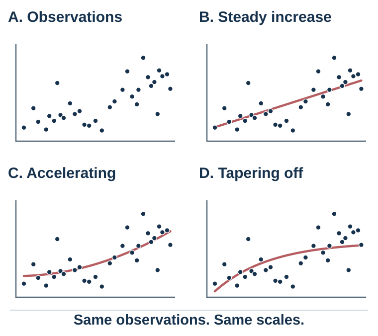
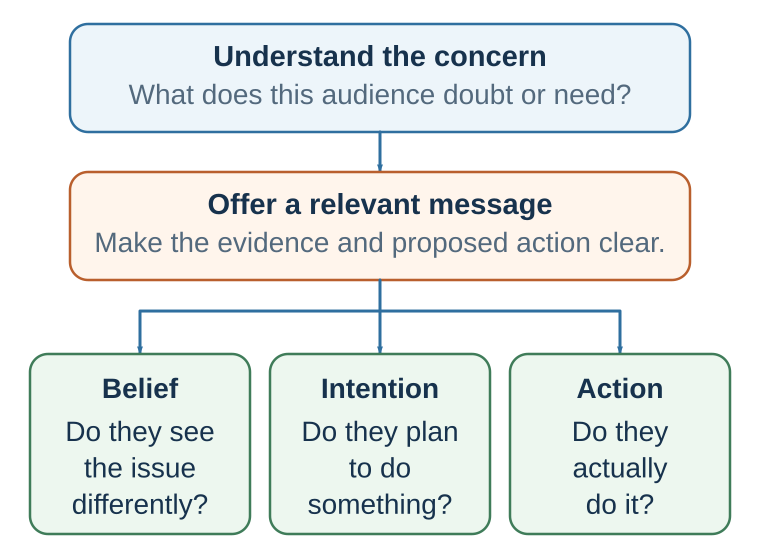

30 Persuasion: Changing Minds Means Updating Models
Changing minds requires more than adding facts
Learning goals
- Diagnose the main barrier preventing a particular audience from revising its model.
- Design an evidence-aligned message that integrates source, argument, emotion, and feasible action.
- Produce and ethically audit a persuasive proposal that preserves the audience’s agency.
Imagine that a company plans to replace a familiar project system with a shared digital platform. Senior leaders see delayed projects, duplicated work, and weak visibility. Employees see surveillance, extra data entry, and another initiative that may disappear in six months. The leaders prepare more efficiency statistics. Resistance hardens.
Many people imagine persuasion as argument: present evidence, give reasons, defeat objections, and the other person should change their mind. Sometimes that works. In this case it does not, because the message answers the leaders’ question—Will the system improve coordination?—while employees are asking different questions: Will it cost me autonomy? Will my data be used against me? Will the promised support arrive?
Facts matter, but facts do not persuade by themselves. They enter a mind already shaped by attention, prior beliefs, values, emotions, identity, trust, and social context. A message that is factually correct may fail if the audience does not trust the source, does not see relevance, feels threatened, lacks ability to process the information, or interprets the message as disrespect.
This is why persuasion is not only about what is said. It is also about who says it, to whom, in what context, with what evidence, through what emotional tone, and with what implied relationship.
The ancient tradition of rhetoric understood this well. Aristotle described three major modes of persuasion: ethos, pathos, and logos (Aristotle, trans. 2007). Logos refers to the argument: evidence, reasoning, examples, and structure. Pathos refers to emotion: the audience’s feelings, values, fears, hopes, anger, compassion, or pride. Ethos refers to the character and credibility of the speaker: whether the audience sees the speaker as knowledgeable, trustworthy, fair, and well-intentioned.
Modern persuasion research has given these ancient ideas more precise psychological language. Source credibility research studies ethos. Emotion and affect research studies pathos. Argument quality, evidence, and reasoning research studies logos. Dual-process theories explain when people scrutinize arguments carefully and when they rely more on cues such as credibility, attractiveness, fluency, emotion, or consensus.
The important lesson is that persuasion rarely works through one route alone. A strong argument from an untrusted source may fail. A trusted source with weak evidence may persuade temporarily but not deeply. A message that evokes emotion without evidence may move people but mislead them. A technically perfect argument may fail if it ignores the audience’s identity or values.
Effective persuasion begins with a question:
What is preventing this audience from changing its mind?
The obstacle may be lack of information. But it may also be distrust, fear, pride, confusion, identity threat, social norms, low relevance, competing goals, or lack of perceived efficacy.
A message should be designed for the actual obstacle, not the obstacle the persuader wishes were there.
From information transfer to model updating
Information transfer says, “Here are more facts,” and quietly assumes that the audience will interpret them as the speaker does. Model-updating persuasion begins one step earlier: what model currently makes these facts mean what they mean? Audiences arrive with expectations about the speaker, the problem, the risk, the proposed solution, and themselves. The same observation can therefore look like traction, noise, danger, or opportunity.
This does not make facts optional. Evidence constrains the models that deserve belief. But a visible pattern may fit several accounts: steady growth, acceleration, or an approaching plateau. Good persuasion names the assumptions, asks what further observation would discriminate among the accounts, and makes uncertainty inspectable. It does not select the most convenient curve and call it “the data.”

Predictive processing offers a useful theoretical lens, especially in perception and action: the system predicts, compares incoming information with expectation, and updates when a credible discrepancy warrants revision (Clark, 2013). It does not scientifically validate a writing template. The practical persuasion sequence is an evidence-disciplined analogy:
| Stage | Diagnostic question | Design move |
|---|---|---|
| Current model | What does this audience expect, and why is that expectation intelligible? | Begin inside shared reality. |
| Meaningful mismatch | What relevant observation can the old model not explain? | Surface one real, consequential gap. |
| Candidate model | What better explanation resolves the gap? | State the mechanism, not merely a preferred conclusion. |
| Evidence | Why should the new account receive more weight? | Match source, comparison, test, and uncertainty to the claim. |
| Action | What feasible next step follows if the update is accepted? | Name who does what, by when, while preserving refusal. |
Build an audience model before building the message. Specify the actual decision-maker; the desired change in thought, feeling, choice, or action; the current model; the main barrier—attention, belief, trust, value, identity, or feasibility; the evidence the audience would regard as credible; and the costs, risks, status concerns, and practical constraints that must be respected. The opening question is not “What do I want to say?” but “What must change in this audience’s model?”
| Barrier | What the audience may be thinking | Appropriate design response |
|---|---|---|
| Attention | “This is one more announcement.” | Lead with the consequential mismatch, not background. |
| Trust | “Management will use the data against us.” | Use a credible messenger, disclose governance, and make commitments verifiable. |
| Comprehension | “I cannot see how this changes my work.” | Demonstrate the workflow with concrete before-and-after tasks. |
| Identity and values | “This treats professional judgment as a defect.” | Protect valued competence and explain what remains under local control. |
| Feasibility | “Even if it helps, I have no time to learn it.” | Provide time, training, support, and a reversible pilot. |
| Belief | “The promised benefit is only a projection.” | State the mechanism, uncertainty, comparison, and success test. |
The organizational-change case has several barriers, not one. Efficiency evidence is relevant to belief, but it cannot by itself repair distrust or create time for training. A persuasive design must therefore match each important barrier with a response.
Ethos: why the source gets weight
People do not evaluate messages separately from messengers. Who speaks matters.
Hovland and Weiss (1951) showed that source credibility affects persuasion. Participants were more persuaded by messages attributed to high-credibility sources than by the same messages attributed to low-credibility sources. Source credibility often includes two major components: expertise and trustworthiness. Expertise means the source is seen as knowledgeable. Trustworthiness means the source is seen as honest and not trying to mislead.
A doctor may have expertise about medicine. A patient may still distrust the doctor if they believe the doctor is rushed, dismissive, financially motivated, or culturally insensitive. A scientist may have expertise about climate data. A skeptical audience may distrust the scientist if the issue has become politically charged. A manager may know the strategic facts. Employees may distrust the message if previous promises were broken.
Trustworthiness is not created by credentials alone. It is built through honesty, transparency, consistency, humility, and demonstrated concern for the audience’s interests.
Research on source credibility has identified several relevant dimensions. Expertise and trustworthiness are central, but goodwill, similarity, attractiveness, status, confidence, and perceived intent can also matter (Pornpitakpan, 2004). People are often more open to sources who seem to understand them, respect them, or share their concerns. This is why a peer messenger may sometimes be more persuasive than an expert, especially when identity and trust are central.
The “sleeper effect” complicates source credibility. Hovland and colleagues found that over time, people may remember the message but forget the source, allowing a message from a low-credibility source to become more persuasive later (Hovland et al., 1949; Kumkale & Albarracín, 2004). This effect is not universal, but it shows why misinformation can linger. A claim may detach from its source and survive as a familiar idea.
Ethos matters in leadership. A leader who asks for sacrifice after sharing sacrifice has more credibility than one who asks others to bear costs alone. A manager who admits uncertainty may be more trusted than one who pretends certainty. A teacher who respects students’ difficulties may be more persuasive when encouraging effort. A negotiator who acknowledges the other side’s legitimate concerns may be more persuasive when making a proposal.
Ethos can also be damaged quickly. Exaggeration, selective evidence, contempt, broken promises, hidden motives, and dismissing reasonable concerns all reduce credibility. Once trust is lost, even accurate messages may fail.
Credibility is not only personal. It is institutional. A message from a university, government agency, company, media outlet, or professional association carries the history of that institution. If the institution has acted unfairly, inconsistently, or arrogantly, the message must overcome that history.
A useful persuasion question is:
Why should this audience trust me on this issue?
If the honest answer is weak, the persuader may need to build trust before presenting arguments.
In the platform case, the chief technology officer may have expertise but lack trust. A respected project leader who helped test the system may be the better messenger. Credibility also requires governance that can be checked: which data are recorded, who can see them, and what decisions the data may inform.
Logos: evidence and causal structure
Logos is persuasion through reason. It includes claims, evidence, warrants, examples, comparisons, causal logic, statistics, counterarguments, and conclusions.
Strong arguments matter most when the audience is motivated and able to think carefully. If the audience cares about the issue, has enough knowledge, has time, and is not overwhelmed, weak arguments are more likely to be detected. If the audience is distracted, indifferent, tired, or overloaded, argument quality matters less and cues matter more.
Evidence can take many forms: statistics, experiments, expert testimony, case studies, analogies, demonstrations, historical examples, and personal experience. Different types of evidence persuade differently. Statistical evidence can show frequency, magnitude, and generality. Examples can make abstract claims concrete. Expert testimony can summarize complex knowledge. Demonstrations can make mechanisms visible. Analogies can transfer understanding from familiar domains.
But evidence must fit the claim. A vivid anecdote cannot prove a general pattern. A statistic without context may not show causality. An expert outside their domain may not be reliable. A correlation may not imply causation. A case study may illustrate a possibility but not a probability.
Persuasion fails when evidence answers the wrong question. Suppose a company wants employees to support a new digital system. Leaders present data showing that the system will increase efficiency. Employees resist because they fear surveillance, job loss, or loss of autonomy. The efficiency evidence may be correct, but it does not address the central concern. A persuasive message must answer the audience’s real question.
Argument structure also matters. A clear message usually states the claim, explains why it matters, presents evidence, addresses objections, and identifies action. Disorganized information increases cognitive strain and reduces persuasion. But oversimplification can produce false clarity. Good logos is not merely simple; it is appropriately structured.
Two-sided messages can be especially persuasive when audiences are informed or skeptical. A two-sided message acknowledges opposing arguments and then responds to them. Hovland, Lumsdaine, and Sheffield (1949) found that two-sided messages could be more effective for audiences initially opposed or exposed to counterarguments. Later research suggests that two-sided refutational messages are often more persuasive than one-sided messages, especially when the audience is likely to hear the other side (O’Keefe, 1999).
Acknowledging counterarguments can increase credibility because it signals fairness. But a weak or superficial acknowledgment can backfire. The audience may feel manipulated if objections are caricatured.
Logos also requires appropriate uncertainty. Overstating certainty may persuade in the short run but damage trust when uncertainty becomes visible. Understating certainty may fail to motivate action. Good persuasion often requires calibrated confidence: clear enough to guide action, honest enough to preserve trust.
A useful question is:
What would a reasonable skeptic need to know?
Not a hostile cynic. Not a passive supporter. A reasonable skeptic. This imagined audience improves logos because it forces the persuader to provide evidence, acknowledge uncertainty, and address real objections.
For the platform, that means more than forecasting “20 percent higher efficiency.” The argument should show where duplication occurs, how the proposed workflow removes it, what comparison produced the estimate, which costs were included, and what outcome would count against adoption after a pilot.
Pathos: making stakes felt
Pathos is persuasion through emotion. It is often treated with suspicion because emotion can manipulate. But emotion is not the enemy of persuasion. Emotion tells people why a message matters.
A message about climate change that contains only temperature projections may inform but not motivate. A message about workplace safety that contains only rules may not change behavior. A message about public health that contains only probabilities may fail to move people. People act when facts connect to value, identity, care, fear, hope, anger, pride, or responsibility.
Emotion directs attention and valuation. Fear highlights danger. Anger highlights injustice and blame. Sadness highlights loss. Hope highlights possibility. Pride highlights identity and achievement. Compassion highlights suffering. Gratitude highlights connection. Guilt highlights responsibility. These emotional meanings shape what actions feel appropriate.
Research on emotion and judgment shows that different emotions influence decisions in different ways (Lerner et al., 2015). Fear tends to increase risk perception and avoidance. Anger can increase certainty and approach. Sadness may increase desire for change. Hope can sustain effort. Persuasion must therefore ask not only whether emotion is present, but which emotion and toward what action.
Fear appeals have been studied extensively in health and risk communication. Fear can motivate protective behavior when people believe the threat is serious, believe they are vulnerable, believe the recommended action is effective, and believe they can perform it. Witte’s extended parallel process model argues that fear appeals can produce danger control or fear control (Witte, 1992). Danger control means the person acts to reduce the threat. Fear control means the person acts to reduce the feeling of fear, perhaps by denial, avoidance, or reactance. A frightening message without efficacy can backfire.
For example, telling people “This disease is deadly” may increase attention. But if people do not believe they can prevent or treat it, they may avoid the message. A better fear appeal pairs threat with efficacy: “This disease is serious, but vaccination greatly reduces risk, and appointments are available here.”
Protection motivation theory similarly argues that protective behavior depends on threat appraisal and coping appraisal: people evaluate severity, vulnerability, response efficacy, and self-efficacy (Rogers, 1975, 1983). Fear alone is insufficient. People need a path.
Positive emotions can also persuade. Hope can motivate collective action. Pride can motivate effort. Gratitude can support reciprocity. Humor can reduce resistance and increase liking, though it can distract from the message if poorly used. Walter and colleagues’ meta-analysis suggests that humor can increase persuasion, especially when humor is relevant and not offensive, but effects vary by context (Walter et al., 2018).
Moral emotions are especially powerful. Anger can mobilize against injustice. Compassion can motivate helping. Disgust can motivate avoidance. But moral emotions can also polarize. A message that activates moral outrage may mobilize supporters while closing the minds of opponents. Ethical persuasion should be careful with emotions that dehumanize, humiliate, or inflame.
Pathos should not replace logos. Emotion without evidence can mislead. But evidence without emotion often fails to motivate. The question is not whether to use emotion, but whether the emotion is appropriate to the truth of the situation and respectful of the audience.
A useful persuasion question is:
What should the audience feel if they truly understood what is at stake?
The word “truly” matters. Ethical pathos makes the value of reality felt. Manipulative pathos manufactures feeling disconnected from reality.
The platform message should therefore make the genuine cost of poor coordination visible without portraying employees as obstacles. Frustration with repeated handoffs, pride in competent work, and relief from avoidable rework fit the evidence. Fear of dismissal does not, unless job loss is genuinely at issue and openly discussed.
Two routes through a message

Modern persuasion research is strongly shaped by dual-process models. Two of the most influential are the elaboration likelihood model and the heuristic-systematic model.
Persuasion depends on both message arguments and the audience’s motivation and ability to elaborate; source cues matter differently under different processing conditions (Petty & Cacioppo, 1986; Chaiken, 1980).
The elaboration likelihood model, developed by Petty and Cacioppo, uses central and peripheral routes as shorthand for the high- and low-elaboration ends of a continuum—not as two sealed boxes in the mind (Petty & Cacioppo, 1986; Petty & Briñol, 2012). Toward the high-elaboration end, people devote more thought to issue-relevant information. Toward the low-elaboration end, attitudes depend more on processes requiring little issue-relevant thought, such as familiarity, affect, or a simple source cue. Mixed processing is common.
The model does not say that one end is always good and the other bad. Nor does more thinking guarantee neutral or rational thinking: extensive elaboration can be selective or identity-defensive. Elaboration depends especially on how motivated and able people are to think about the message.
Motivation is higher when the issue is personally relevant, important, surprising, or connected to goals. Ability is higher when the message is understandable, the person has enough knowledge, distractions are low, and time is available. When motivation and ability are high, argument quality matters more. When motivation or ability is low, peripheral cues matter more.
Petty, Cacioppo, and Goldman (1981) demonstrated this with a study about comprehensive exams. When the issue was highly relevant to students, strong arguments produced more persuasion than weak arguments. When relevance was low, source expertise mattered more. More generally, the same variable can play different roles: source expertise can operate as a simple cue, be treated as evidence relevant to the merits, change the motivation to think, bias the thoughts generated, or change confidence in those thoughts. Its role must be identified rather than inferred from the label central or peripheral.
The heuristic-systematic model, developed by Chaiken, makes a related distinction between systematic processing and heuristic processing (Chaiken, 1980; Chaiken et al., 1989). Systematic processing involves comparatively careful evaluation of message content. Heuristic processing relies on simple rules such as “experts can be trusted,” “longer messages are stronger,” “consensus implies correctness,” or “likable people are credible.” The processes can co-occur rather than forcing an either–or classification.
One useful idea from this model is the sufficiency principle: people exert enough effort to reach a desired level of confidence, but not more. If a low-effort heuristic gives enough confidence, they may stop. If the decision is important or uncertainty remains, they may process more systematically.
These models connect persuasion to the rest of the book. Heuristics, fluency, authority, social proof, and affect can influence attitudes under lower elaboration, but they can also alter what people think about, how they interpret evidence, and how confident they are under higher elaboration. The scientific question is therefore not simply “Which route?” It is “How much issue-relevant thinking occurred, what did this variable do within that processing, and what changed—belief, evaluation, intention, or action?”
Attitudes formed or changed through greater elaboration tend, under appropriate conditions, to be more persistent, resistant to counterpersuasion, and predictive of behavior because they are connected to a more developed structure of supporting thoughts. That is a tendency, not a guarantee: durable reasoning can still be based on biased search or weak premises. Lower-elaboration change may be more fragile, though repetition, identity, learning, and later experience can stabilize it.
This has practical implications.
If the issue is important and the audience is motivated, provide strong arguments, evidence, and meaningful engagement. Do not rely only on slogans.
If the audience is overloaded or low-involvement, make the message simple, credible, timely, and easy to act on. Do not bury the point in technical detail.
If the audience is skeptical, acknowledge objections and provide credible evidence.
If the audience lacks ability to process, simplify without distorting.
If the audience’s identity is threatened, credibility and respect must come before argument.
A useful question is:
Is this audience willing and able to think deeply about this message right now?
The answer determines the persuasion strategy.
| Audience condition | Likely elaboration pattern | Design implication |
|---|---|---|
| High motivation and ability | Higher elaboration is likely; cues may still shape direction or confidence. | Use strong evidence, causal logic, uncertainty, and counterarguments. |
| High motivation, low ability | Elaboration is desired but constrained by comprehension, time, or load. | Reduce jargon, scaffold concepts, and show concrete mechanisms. |
| Low motivation, high ability | Lower elaboration is likely unless relevance increases; mixed processing remains possible. | Establish genuine relevance before adding detail. |
| Low motivation and ability | Lower-elaboration processes and simple cues are more influential. | Use transparent cues, one clear action, and avoid exploiting inattention. |
The audience is part of the message
A message is not persuasive in isolation. It is persuasive to someone.
Audience analysis is therefore central. The same message can persuade one group, fail with another, and backfire with a third.
Several audience factors matter.
Prior attitude. People who already agree need reinforcement or action guidance. People who are undecided need clarity and relevance. People who disagree need trust, respect, and reasons to reconsider. Strongly opposed audiences may react defensively if the message attacks identity.
Involvement. If the issue matters personally, people think more carefully and counterargue more. If involvement is low, cues and simplicity matter more.
Knowledge. Experts need different messages from novices. Experts may want nuance, evidence, and caveats. Novices may need clear categories and concrete examples. Too much detail can overwhelm; too little can insult.
Need for cognition. Some people enjoy effortful thinking more than others (Cacioppo & Petty, 1982). High need-for-cognition audiences may respond more to argument quality. Low need-for-cognition audiences may prefer simpler cues and concrete implications.
Identity. Messages that threaten identity often produce resistance. A climate message framed as “people like you are irresponsible” may backfire. A health message framed as “you are failing” may produce shame. A workplace message framed as “your old skills are obsolete” may threaten professional identity.
Values. People are persuaded by messages that connect to values they hold. Moral foundations theory suggests that people differ in the moral concerns they emphasize, such as care, fairness, loyalty, authority, sanctity, and liberty (Graham et al., 2013; Haidt, 2012). A policy argument framed only in terms of care may fail with an audience that prioritizes liberty or loyalty. Persuasion often requires moral translation: connecting the message to the audience’s values rather than only the persuader’s values (Feinberg & Willer, 2015).
Efficacy. People must believe action is possible. A message that creates concern without agency can produce avoidance.
Trust. When trust is low, facts may be interpreted as tactics. Before persuasion, the communicator may need to repair relationship.
This is why persuasion requires empathy. Not agreement, but accurate perspective-taking: What does the audience already believe? What do they fear? What do they value? What identity is at stake? What objections are reasonable from their perspective? What would make change feel safe, honorable, useful, or necessary?
A common persuasion error is egocentric messaging: persuaders use arguments that persuade themselves. A scientist gives more data because data persuade scientists. A manager emphasizes efficiency because efficiency persuades managers. A public health official emphasizes population risk because population risk persuades officials. But the audience may care about freedom, dignity, trust, identity, immediate cost, or practical barriers.
Good persuasion begins where the audience is, not where the persuader wishes they were.
Message strength and structure
A persuasive message needs content and form. The content must be credible. The form must help the audience process and remember it.
A strong message usually has a clear claim, relevant evidence, understandable reasoning, and a feasible action. It should answer: What is the issue? Why does it matter? What should the audience believe or do? Why? What about objections? What comes next?
Clarity matters because cognitive resources are limited. A confusing message may fail even when the evidence is strong. But clarity is not the same as oversimplification. A clear message makes complexity usable; an oversimplified message hides complexity.
Concreteness helps. Abstract claims are often less memorable than concrete examples. “This policy improves access” is less vivid than “Patients can book an appointment in three minutes instead of waiting on hold for forty.” Concrete details help the audience simulate consequences. However, concreteness can also mislead if the example is unrepresentative. A single vivid case should not be allowed to overpower base rates.
Statistics and examples work best together. Statistics show scope. Examples show meaning. A statistic without a human example may feel cold. An example without statistics may distort probability. A health campaign might say, “One in eight people in this group will face this condition,” and then show one person’s story to make the number human. The chapters on why stories move minds and building an evidence-aligned message show how to braid the two.
Message order can matter. Primacy effects occur when early information has more influence; recency effects occur when later information has more influence. Effects depend on time, memory, and context (Haugtvedt & Wegener, 1994). In practical communication, the safest rule is to begin with the central point when attention is limited, but build carefully when resistance is high.
Repetition matters, but it must be handled ethically. Repetition increases familiarity and fluency, as earlier chapters showed. Repeated true messages can help people remember. Repeated misleading claims can create illusory truth. A persuasive message should repeat what is accurate and important, not simply what benefits the persuader.
Message framing also matters, as earlier chapters showed. The same fact can be framed as gain or loss, safety or danger, investment or cost. Ethical persuasion should not rely on one frame that hides the trade-off. In high-stakes decisions, multiple frames may be necessary.
The call to action should be specific. “Be healthier” is vague. “Schedule a screening this week” is actionable. “Support innovation” is vague. “Approve a three-month pilot with these success metrics” is actionable. “Communicate better” is vague. “Begin each meeting by asking for one concern before discussion” is actionable.
Persuasion often fails at the final step. People may agree but not act. A message changes attitude, but behavior requires opportunity, timing, habit, social support, and reduced friction. This is why persuasion connects to nudge and choice architecture. A persuasive health message should be paired with easy appointment booking. A persuasive savings message should be paired with automatic enrollment. A persuasive organizational message should be paired with changed routines.
A useful message-design checklist:
What is the claim? What evidence supports it? Why should this audience care? What values does it connect to? What objections are likely? What action is feasible? What makes action easy or hard? What should be repeated? What should not be oversimplified? What would make the message trustworthy?
A message is not complete until it meets the audience at the point of action.
Resistance and reactance
Persuasion is not only about changing minds. It is also about understanding why minds resist change.
People resist persuasion for many reasons. They may distrust the source. They may disagree with the evidence. They may feel the message threatens identity. They may fear loss. They may suspect manipulation. They may not believe action is possible. They may be loyal to a group. They may have heard counterarguments. They may simply not care.
Reactance occurs when people perceive that their freedom is being threatened and become motivated to restore it (Brehm, 1966; Brehm & Brehm, 1981). A message that says “You must,” “You have no choice,” or “Only ignorant people disagree” can produce resistance, especially when autonomy is valued. People may reject not only the message but also the messenger.
Reactance is common in health, politics, parenting, management, and marketing. A teenager may resist advice because it feels controlling. Employees may resist change because communication feels imposed. Citizens may resist public health guidance if it is framed as coercive or contemptuous. Consumers may resist sales pressure.
Reactance does not mean persuasion should avoid strong recommendations. Sometimes strong guidance is necessary. But autonomy-supportive communication often works better than controlling communication. Deci and Ryan’s self-determination theory emphasizes that people are more motivated when they experience autonomy, competence, and relatedness (Deci & Ryan, 2000). A message that supports choice, explains reasons, acknowledges concerns, and offers feasible action is less likely to trigger reactance.
A controlling message says: “You have to do this.” An autonomy-supportive message says: “Here is why this matters, here are the options, and here is what we recommend.”
Inoculation theory offers another approach to resistance. McGuire (1964) proposed that people can be made more resistant to persuasion by exposing them to weakened counterarguments and refutations, much like a vaccine exposes the body to a weakened threat. Inoculation messages warn people that they may encounter persuasion attempts, present common misleading arguments, and refute them. Meta-analyses suggest that inoculation can build resistance across domains (Banas & Rains, 2010).
Inoculation is useful against misinformation. For example, instead of only correcting false claims after they spread, communicators can teach people common manipulation techniques: fake experts, false balance, conspiracy logic, emotional scapegoating, cherry-picking, and misleading graphs. When people later encounter these tactics, they may recognize them.
However, persuasion can backfire if corrections threaten identity or repeat myths poorly. The evidence for a strong “backfire effect,” where corrections routinely strengthen false beliefs, is more limited than popular accounts sometimes suggest (Wood & Porter, 2019). Still, corrections can fail when people distrust sources or when misinformation fits identity. Effective correction should be clear, credible, repeated, and provide an alternative explanation (Lewandowsky et al., 2012).
Persuasion should also respect psychological ownership. People are more open when they feel they are participating in the conclusion. Asking questions, inviting reflection, and allowing self-generated reasons can be more effective than pushing. Motivational interviewing, developed in clinical contexts, uses empathy, autonomy support, and eliciting the person’s own reasons for change rather than direct confrontation (Miller & Rollnick, 2013). It is a model of respectful persuasion.
A useful question is:
What freedom, identity, or value might this message threaten?
If the persuader cannot answer that, resistance may be misdiagnosed as ignorance or stubbornness.
The platform pilot should preserve meaningful choice where possible: teams can compare two workflows, propose safeguards, and examine results before scale-up. Participation does not mean that every organizational decision becomes a referendum. It means that concerns become testable inputs rather than labels such as “resistance to change.”
Ethical persuasion
Persuasion creates moral responsibility because it changes how people think and act.
Ethical persuasion is not the same as weak persuasion. It can be clear, forceful, emotional, and strategic. But it respects the audience as decision-makers rather than treating them as objects to manipulate.
Several principles can guide ethical persuasion.
Truthfulness. Do not knowingly use false claims, misleading statistics, fake experts, or deceptive framing. Omitting relevant information can also mislead.
Respect for autonomy. The audience should be able to understand the message, consider alternatives, and refuse without hidden punishment.
Proportional emotion. Emotional appeals should fit the real stakes. Do not manufacture fear, outrage, shame, or hope disconnected from evidence.
Transparency of intent. Persuasion should not disguise itself as neutral information when the intent is to influence.
Audience welfare. The message should not exploit vulnerability, confusion, addiction, fear, or social pressure against the audience’s interests.
Fair representation. Opposing views should not be caricatured when the issue is complex and high-stakes.
Accountability. Persuaders should be willing to answer for the consequences of their influence.
Manipulation occurs when persuasion bypasses or undermines the audience’s capacity to make a reflective choice. It may use deception, hidden motives, artificial urgency, identity threat, fear without efficacy, or emotional exploitation. Not all influence is manipulation. But influence becomes morally suspect when it benefits the persuader by making the audience less able to judge well.
Ethical persuasion is especially important in asymmetrical relationships: doctor-patient, teacher-student, manager-employee, government-citizen, expert-public, platform-user, adult-child, negotiator-counterpart with unequal power. The more power the persuader has, the greater the duty to communicate responsibly.
A useful ethical test is:
Would I still endorse this message if the audience fully understood how it was designed to influence them?
If the answer is no, the message needs revision.
The platform proposal, redesigned
The original message said, in effect, “The evidence shows that this platform is efficient; therefore use it.” The redesigned proposal follows the audience’s model instead of ignoring it.
First, it begins in shared reality: teams are losing time to duplicate files, conflicting versions, and invisible handoffs. Second, it names the concern fairly: a shared system can improve coordination and create surveillance if access rules are vague. Third, it offers evidence matched to the claims: workflow data for duplication, a live demonstration for usability, written governance for data use, and a limited pilot for predicted time savings. Fourth, it makes identity and value explicit: the aim is to protect professional time and judgment, not replace them. Finally, it proposes an actionable and revisable step: two volunteer teams test the system for six weeks against predeclared measures, with training time, an independent feedback channel, and a decision rule for stopping, revising, or scaling.
Ethos, logos, and pathos now support the same update. A trusted project leader and a technical specialist share the message. The causal argument is inspectable. The emotional stakes—avoidable frustration, competent work, and fear of misuse—fit the situation. Motivation and ability are supported by relevance, demonstration, training, and time. Resistance is not treated as a defect; it helps specify the test.
This design may still fail. Employees may reasonably reject the trade-off, the pilot may show little benefit, or governance may remain untrustworthy. Persuasion is not successful merely because the audience agrees. It is successful when a defensible model receives appropriate weight and the audience retains the capacity to judge and refuse.
A broad, reliable “backfire effect” is not the default response to correction. Resistance depends on identity, trust, repetition, source, and correction design.
Practice Lab
Choose one organizational change that has met resistance. Produce a one-page persuasion brief containing: the desired response; the audience’s current model; a completed barrier matrix; one claim-evidence-warrant chain; the messenger and why that source deserves weight; the appropriate emotional stake; a feasible next action; and one observation that would make you revise or withdraw the proposal. End with the transparency test: would you still use this design if the audience could see the brief?
Take it forward
- Use this when: accurate information is available but an audience’s attention, trust, interpretation, values, or ability prevents warranted updating.
- Do not infer: acceptance proves truth, or resistance proves ignorance; both may reflect incentives, identity, power, or evidence quality.
- Try this next: replace one generic message with a barrier-matched proposal and predeclare what result would change your own mind.
References cited in this chapter
Aristotle. (2007). On rhetoric: A theory of civic discourse (G. A. Kennedy, Trans., 2nd ed.). Oxford University Press. (Original work ca. 4th century BCE).
Banas, J. A., & Rains, S. A. (2010). A meta-analysis of research on inoculation theory. Communication Monographs, 77(3), 281–311.
Brehm, J. W. (1966). A theory of psychological reactance. Academic Press.
Brehm, S. S., & Brehm, J. W. (1981). Psychological reactance: A theory of freedom and control. Academic Press.
Cacioppo, J. T., & Petty, R. E. (1982). The need for cognition. Journal of Personality and Social Psychology, 42(1), 116–131.
Chaiken, S. (1980). Heuristic versus systematic information processing and the use of source versus message cues in persuasion. Journal of Personality and Social Psychology, 39(5), 752–766.
Chaiken, S., Liberman, A., & Eagly, A. H. (1989). Heuristic and systematic information processing within and beyond the persuasion context. In J. S. Uleman & J. A. Bargh (Eds.), Unintended thought (pp. 212–252). Guilford Press.
Cialdini, R. B., Vincent, J. E., Lewis, S. K., Catalan, J., Wheeler, D., & Darby, B. L. (1975). Reciprocal concessions procedure for inducing compliance: The door-in-the-face technique. Journal of Personality and Social Psychology, 31(2), 206–215.
Clark, A. (2013). Whatever next? Predictive brains, situated agents, and the future of cognitive science. Behavioral and Brain Sciences, 36(3), 181–204.
Deci, E. L., & Ryan, R. M. (2000). The “what” and “why” of goal pursuits: Human needs and the self-determination of behavior. Psychological Inquiry, 11(4), 227-268.
Feinberg, M., & Willer, R. (2015). From gulf to bridge: When do moral arguments facilitate political influence? Personality and Social Psychology Bulletin, 41(12), 1665–1681.
Freedman, J. L., & Fraser, S. C. (1966). Compliance without pressure: The foot-in-the-door technique. Journal of Personality and Social Psychology, 4(2), 195–202.
Graham, J., Haidt, J., Koleva, S., Motyl, M., Iyer, R., Wojcik, S. P., & Ditto, P. H. (2013). Moral foundations theory: The pragmatic validity of moral pluralism. In P. Devine & A. Plant (Eds.), Advances in experimental social psychology (Vol. 47, pp. 55–130). Academic Press.
Haidt, J. (2012). The righteous mind: Why good people are divided by politics and religion. Pantheon.
Haugtvedt, C. P., & Wegener, D. T. (1994). Message order effects in persuasion: An attitude strength perspective. Journal of Consumer Research, 21(1), 205–218.
Hovland, C. I., Lumsdaine, A. A., & Sheffield, F. D. (1949). Experiments on mass communication. Princeton University Press.
Hovland, C. I., & Weiss, W. (1951). The influence of source credibility on communication effectiveness. Public Opinion Quarterly, 15(4), 635–650.
Kumkale, G. T., & Albarracín, D. (2004). The sleeper effect in persuasion: A meta-analytic review. Psychological Bulletin, 130(1), 143–172.
Langer, E. J., Blank, A., & Chanowitz, B. (1978). The mindlessness of ostensibly thoughtful action: The role of “placebic” information in interpersonal interaction. Journal of Personality and Social Psychology, 36(6), 635–642.
Lerner, J. S., Li, Y., Valdesolo, P., & Kassam, K. S. (2015). Emotion and decision making. Annual Review of Psychology, 66, 799–823.
Lewandowsky, S., Ecker, U. K. H., Seifert, C. M., Schwarz, N., & Cook, J. (2012). Misinformation and its correction: Continued influence and successful debiasing. Psychological Science in the Public Interest, 13(3), 106–131.
McGuire, W. J. (1964). Inducing resistance to persuasion: Some contemporary approaches. In L. Berkowitz (Ed.), Advances in experimental social psychology (Vol. 1, pp. 191–229). Academic Press.
Miller, W. R., & Rollnick, S. (2013). Motivational interviewing: Helping people change (3rd ed.). Guilford Press.
O’Keefe, D. J. (1999). How to handle opposing arguments in persuasive messages: A meta-analytic review of the effects of one-sided and two-sided messages. Annals of the International Communication Association, 22(1), 209–249.
Petty, R. E., & Briñol, P. (2012). The elaboration likelihood model. In P. A. M. Van Lange, A. W. Kruglanski, & E. T. Higgins (Eds.), Handbook of theories of social psychology (Vol. 1, pp. 224–245). Sage.
Petty, R. E., & Cacioppo, J. T. (1986). Communication and persuasion: Central and peripheral routes to attitude change. Springer.
Petty, R. E., Cacioppo, J. T., & Goldman, R. (1981). Personal involvement as a determinant of argument-based persuasion. Journal of Personality and Social Psychology, 41(5), 847–855.
Pornpitakpan, C. (2004). The persuasiveness of source credibility: A critical review of five decades’ evidence. Journal of Applied Social Psychology, 34(2), 243–281.
Rogers, R. W. (1975). A protection motivation theory of fear appeals and attitude change. Journal of Psychology, 91(1), 93–114.
Rogers, R. W. (1983). Cognitive and physiological processes in fear appeals and attitude change: A revised theory of protection motivation. In J. Cacioppo & R. Petty (Eds.), Social psychophysiology (pp. 153–176). Guilford Press.
Walter, N., Cody, M. J., Xu, L. Z., & Murphy, S. T. (2018). A priest, a rabbi, and a minister walk into a bar: A meta-analysis of humor effects on persuasion. Human Communication Research, 44(4), 343–373.
Witte, K. (1992). Putting the fear back into fear appeals: The extended parallel process model. Communication Monographs, 59(4), 329–349.
Wood, T., & Porter, E. (2019). The elusive backfire effect: Mass attitudes’ steadfast factual adherence. Political Behavior, 41(1), 135–163.